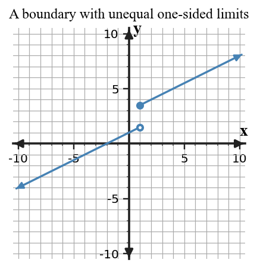

Continuity and Discontinuity
Core idea: Continuity at a point requires the function value to exist, the two-sided limit to exist, and those values to be equal.
You will test continuity, choose parameters for piecewise functions, and classify discontinuities.
Learning Target
Analyze continuity at a point and on intervals, and classify discontinuities using limits, function values, and piecewise definitions.
I can statements
- I can analyze continuity at a point and on intervals, and classify discontinuities using limits, function values, and piecewise definitions.
- I can determine parameter values that make a piecewise function continuous.
- I can justify a discontinuity classification from multiple representations.
Vocabulary / Key Notation Preview
- continuity
- discontinuity
- piecewise function
- removable discontinuity
- jump discontinuity
Skim the terms now. Add meaning as each term is introduced in the notes.
What's To Come
This is a long-range preview for this section. Do not solve it yet. Circle anything familiar, underline symbols, labels, conditions, data, or features that seem important, and write short notes about what you think may matter later.

At the boundary $x=1$, identify the left-hand limit, right-hand limit, and function value. What must be true for this boundary to be continuous?
Content: Read, Represent, Annotate, Apply
Directions
Read in short chunks. Annotate the prose and representations together. Mark evidence, conditions, important quantities, labels, patterns, and questions.
Reading 1: Three Conditions at a Point
A function has continuity at $x=a$ when three pieces fit together: (1) $f(a)$ exists, (2) the two-sided limit $\lim_{x\to a}f(x)$ exists, and (3) $\lim_{x\to a}f(x)=f(a)$. Checking only one or two conditions is incomplete.
On an open interval, continuity must hold at every point. On a closed interval $[a,b]$, continuity at the endpoints is interpreted one-sided: the function is right-continuous at $a$ and left-continuous at $b$, while ordinary two-sided continuity is required at interior points.
Stop and Discuss
- Why is knowing that $f(a)$ exists not enough to establish continuity at $a$?
- Which condition explicitly connects the nearby behavior to the assigned function value?
- $f(a)$ exists.
- $\lim_{x\to a}f(x)$ exists.
- $\lim_{x\to a}f(x)=f(a)$.
Use all three conditions when a justification asks whether a function is continuous at a point.
Example 1: State the Continuity Conditions
State the three conditions for continuity of $f$ at $x=a$.
You Try It 1: Diagnose an Incomplete Continuity Check
A classmate checks only that $g(2)$ exists and declares g continuous at 2. What two checks are still needed?
Reading 2: Piecewise Boundaries Turn Continuity into an Equation
A piecewise function may use different formulas on opposite sides of a boundary. To make the function continuous there, compare the left-hand expression, the right-hand expression, and the defined boundary value. A parameter is chosen so the relevant values agree.
At an interior piecewise boundary $x=a$, the usual target is $$\lim_{x\to a^-}f(x)=\lim_{x\to a^+}f(x)=f(a).$$ The inequality symbols in the piecewise definition tell you which formula supplies the actual value $f(a)$.
Stop and Discuss
- At a piecewise boundary, how do you determine which formula gives the actual function value?
- Why must matching one-sided limits be checked before declaring the boundary continuous?
Evaluate the left-hand expression at the boundary to obtain the required approach value. Evaluate the right-hand expression at the boundary in terms of the parameter. Set those values equal and solve. Finally, confirm that the branch containing equality gives the same function value.
Example 2: Choose a Parameter for Continuity
Find k so $f(x)=\begin{cases}x+3,&x\lt 2\\ kx-1,&x\ge2\end{cases}$ is continuous at 2.
You Try It 2: Match Piecewise Boundary Values
Find c so $g(x)=\begin{cases}2x-1,&x\lt 3\\ cx+2,&x\ge3\end{cases}$ is continuous at 3.
Reading 3: Classify the Type of Break
A discontinuity occurs when one or more continuity conditions fail. A removable discontinuity occurs when the two-sided limit exists but the function value is missing or is assigned a different value. Graphically, it often appears as a hole, possibly with a filled point elsewhere at the same input.
A jump discontinuity occurs when the left-hand and right-hand limits are finite but unequal. Because the one-sided limits disagree, no single finite two-sided limit exists at the jump.

Stop and Discuss
- What evidence distinguishes a removable discontinuity from a jump discontinuity?
- If the two-sided limit exists but differs from $f(a)$, which continuity condition fails?
| Nearby behavior | Classification |
|---|---|
| Two-sided limit exists, but point value is missing/different | removable discontinuity |
| Finite one-sided limits exist but are unequal | jump discontinuity |
Example 3: Classify a Removable Discontinuity
A graph has a hole on an otherwise connected curve at x=4 and a filled dot elsewhere at x=4. Classify the discontinuity.
You Try It 3: Identify a Misassigned Point Value
At x=-2, a graph approaches 1 from both sides but f(-2)=6. Classify the discontinuity.
Example 4: Classify a Jump Discontinuity
If left- and right-hand limits at a point are different finite numbers, classify the discontinuity.
You Try It 4: Compare Unequal One-Sided Limits
A piecewise function approaches -3 from the left and 2 from the right at its boundary. What type of discontinuity occurs?
Vocabulary / Notation Definitions
| Term / notation | Meaning in this section |
|---|---|
| continuity | At a point, the function value exists, the two-sided limit exists, and the two are equal. |
| discontinuity | A point where the required continuity condition(s) fail. |
| piecewise function | A function defined by different formulas on different parts of its domain. |
| removable discontinuity | The two-sided limit exists, but the function value is missing or does not equal that limit. |
| jump discontinuity | The finite left-hand and right-hand limits exist but are unequal. |
Summary
- Continuity at a point requires all three conditions, not just a defined function value.
- At a piecewise boundary, compare both one-sided limits and the branch that defines the point.
- A removable discontinuity has a common two-sided limit; a jump has unequal finite one-sided limits.
- Continuity on closed intervals uses one-sided endpoint conditions.
Common Mistakes
| Mistake | Why it is tempting | Check instead |
|---|---|---|
| Checking only that $f(a)$ exists. | A plotted point feels like enough information. | Check the two-sided limit and its equality with $f(a)$. |
| Equating the wrong piecewise branches. | Both formulas are visible at the boundary. | Use one-sided behavior and note which inequality includes the boundary. |
| Calling every hole a jump. | Both are visible breaks in a graph. | Compare one-sided limits: equal gives removable behavior; unequal finite values give a jump. |
| Ignoring endpoint direction on a closed interval. | The word “continuous” suggests two-sided limits everywhere. | At an endpoint, use the one-sided limit from within the interval. |